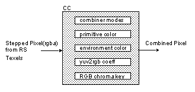
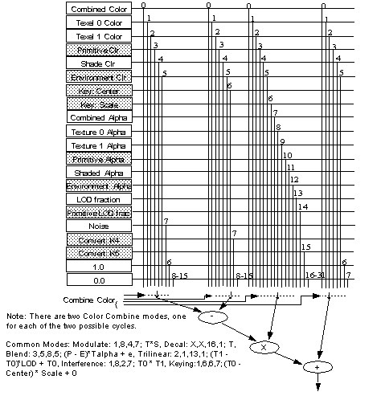
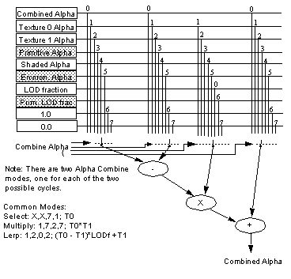

|
|
CC: Color Combiner
The color combiner (CC) combines texels from TX and stepped RGBA pixel values from RS. The CC is the ultimate paint mixer. It can take two color values from many sources and linearly interpolate between them. The CC basically performs this equation:
newcolor = (A - B) x C + D
Here, A, B, C, and D can come from many different sources. Notice that if D=B, then this is a simple linear interpolator.
Figure 12.6.1 Color Combiner State and Input/Output
Most of CC programming involves setting the desired sources for (A,B,C,D) of the equation above. There are also programmable color registers within CC that can be used to source (A,B,C,D) input of the interpolator.
Color and Alpha Combiner Inputs Sources
Figure 12.6.2 RGB Color Combiner Input Selection
Figure 12.6.3 Alpha Combiner Input Selection
CC Internal Color Registers
Table 1 gsSetPrimColor(minlevel, frac, r, g, b, a), gsDPSetEnvColor(r, g, b, a)
One-Cycle Mode
Table 2 One-Cycle Mode Using gsDPSetCombineMode(mode1, mode2)
Note: In one-cycle mode, mode1 and mode2 should be the same value.
Two-Cycle Mode
Table 3 Two-Cycle Mode Using gsDPSetCombineMode(mode1, mode2)
Custom Modes
#define G_CC_MYNEWMODE a,b,c,d, A,B,C,D
Where the color output will be (a-b)*c+d and the alpha output will be (A-B)*C+D. The values you can use for each of a, b, c, d, A, B, C, and D are:
Then you can use your new mode just like a regular mode:
gDPSetCombineMode(G_CC_MYNEWMODE, G_CC_MYNEWMODE);
Chroma Key
The theory is quite simple; a key color is provided, and all pixels of this color are replaced by the texel color requested. The key color is actually specified as a center and width, allowing soft-edge chroma keying (for blended colors):
Chroma Key Equations

The following picture describes all possible input selection of a general purpose linear interpolator for RGB and Alpha color combination. The input in the shaded boxes are CC internal state that you can set. Most are programmable color registers.


There are two internal color registers in the CC: primitive and environment color. The primitive color can be used to set a constant polygon face color. The environment color can be used to represent the ambient color of the environment. Both can be used as source for linear interpolation. The names “primitive” and “environment” are purely arbitrary; you can use them for any purpose you wish.
Parameter
Value
minlevel
minimum LOD level
frac
LOD fraction for blending two texture tiles
r, g, b, a
color
Many of the typical RGB and alpha input selections are predefined in Section 12.7, Table 1, "One-Cycle Mode gsDPSetRenderMode(mode1, mode2)." In 1 cycle mode both mode1 and mode2 should be the same. Please see the man page for gDPSetCombineMode for a description of each mode setting.
Parameter
Value
mode1/2
G_CC_PRIMITIVE
G_CC_SHADE
G_CC_ADDRGB
G_CC_ADDRGBDECALA
G_CC_SHADEDECALA
mode1/2
Decal textures in RGB, RGBA formats
G_CC_DECALRGB
G_CC_DECALRGBA
mode1/2
Modulate texture in I, IA, RGB, RGBA formats
G_CC_MODULATEI
G_CC_MODULATEIA
G_CC_MODULATEIDECALA
G_CC_MODULATERGB
G_CC_MODULATERGBA
G_CC_MODULATERGBDECALA
G_CC_MODULATEI_PRIM
G_CC_MODULATEIA_PRIM
G_CC_MODULATEIDECALA_PRIM
G_CC_MODULATERGB_PRIM
G_CC_MODULATERGBA_PRIM
G_CC_MODULATERGBDECALA_PRIM
mode1/2
Blend texture in I, IA, RGB, RGBA formats
G_CC_BLENDI
G_CC_BLENDIA
G_CC_BLENDIDECALA
G_CC_BLENDRGBA
G_CC_BLENDRGBDECALA
mode1/2
Reflection and specular hilite in RGB, RGBA formats.
G_CC_REFLECTRGB
G_CC_REFLECTRGBDECALA
G_CC_HILITERGB
G_CC_HILITERGBA
G_CC_HILITERGBDECALA
Color Combiner (CC) can perform two linear interpolation arithmetic computations in two-cycle pipeline mode. Typically, the second cycle is used to perform texture and shading color modulation (in other words, all those modes you saw in one-cycle mode). However, the first cycle can be used for another linear interpolation calculation; for example, LOD interpolation between the two bilinear filtered texels from two mipmap tiles.
Parameter
Value
mode1
G_CC_TRILERP
G_CC_INTERFERENCE
mode2
G_CC_PASS2
Most of the Decal, Modulate, Blend and Reflection/Hilite texture modes mentioned in one cycle mode. However, since they are values for mode2 parameter, the names must all end with 2. e.g. G_CC_MODULATEI2.
Color Combiner (CC) can be programmed more specifically when you design your own color combine modes. To define a new mode use the format:
COMBINED combined output from cycle 1 mode TEXEL0 texture map output TEXEL1 texture map output from tile+1 PRIMITIVE PrimColor SHADE Shade color ENVIRONMENT Environment color CENTER chroma key center value SCALE key scale value COMBINED_ALPHA combined alpha output from cycle 1 TEXEL0_ALPHA texture map alpha TEXEL1_ALPHA texture map alpha from tile+1 PRIMITIVE_ALPHA PrimColor Alpha SHADE_ALPHA Shade alpha ENV_ALPHA Environment color alpha LOD_FRACTION LOD fraction PRIM_LOD_FRAC Prim LOD fraction NOISE noise (random) K4 color convert constant K4 K5 color convert constant k5 1 1.0 0 0.0
The color combiner can be used to perform “chroma keying”, which is a process where areas of a certain color are taken out and replaced with a texture. This is a similar effect to “blue screen photography”, or as seen on the television news weather maps.
KeyR = clamp(0, (-abs((R - RCen) * RScl) + RWd), 255)
KeyG = clamp(0, (-abs((G - GCen) * GScl) + GWd), 255)
KeyB = clamp(0, (-abs((B - BCen) * BScl) + BWd), 255)
KeyA = min(KeyR, KeyG, KeyB)
The center, scale, and width parameters have the following meanings:
In two-cycle mode, the keying operation must be specified in the second cycle (key alpha is not available as a combine operand). The combine mode G_CC_CHROMA_KEY2 is defined for this purpose.
The command:
gsDPSetCombineKey(G_CK_KEY);
enables chroma keying.
The commands:
gsDPSetKeyR(cR, sR, wR); gsDPSetKeyGB(cG, sG, wG, cB, sB, wB);
allow you to set the parameters for each channel.
|
Copyright © 1999 Nintendo of America Inc. All Rights Reserved Nintendo and N64 are registered trademarks of Nintendo Last Updated January, 1999 |